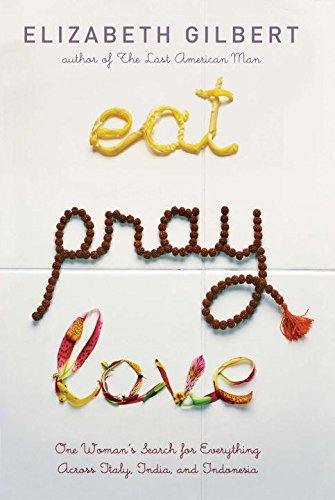
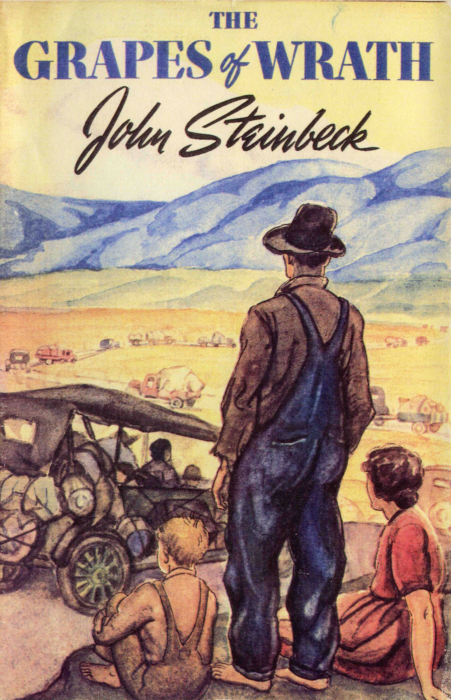
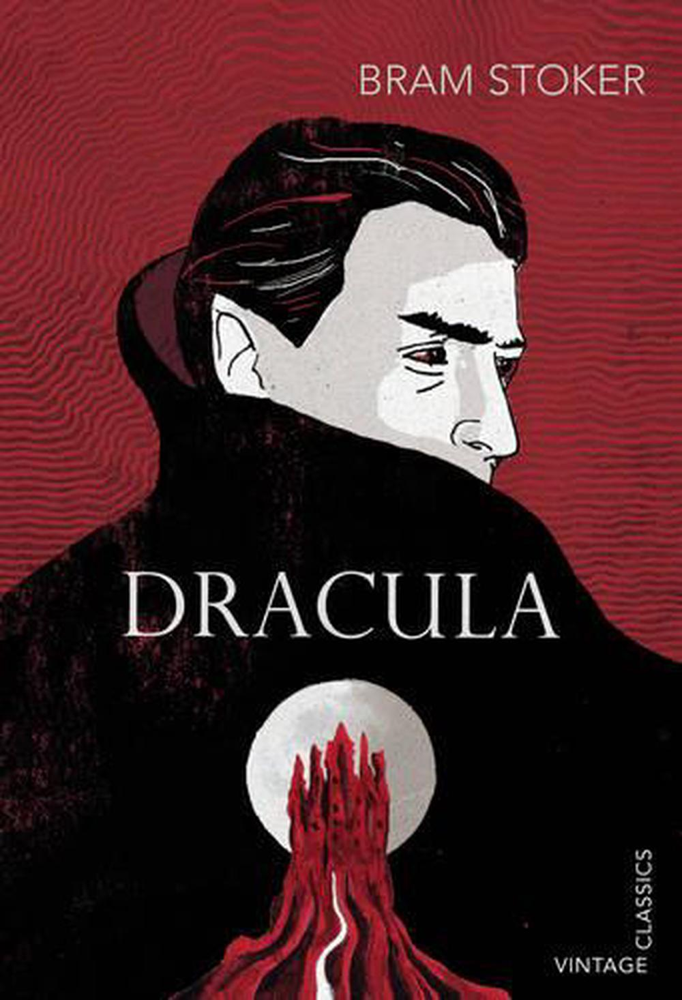

The Best Books Acording to Ana Maria!
My top 3 books of all-time.
Eat, Pray, Love

Synopsis:
Elizabeth Gilbert was almost thirty years old and had everything any woman could want: a loving husband, a spacious house, the plan to have children and a successful career. But instead of feeling happy and fulfilled, she felt confused, sad and panicked. She faced a divorce, debilitating depression and another failed love. Until she decided to make a radical decision: she got rid of all her material possessions, quit her job, and went on a year-long trip around the world – alone. This book is the engaging chronicle of that year. Her goal was to visit three places where she could examine aspects of her own nature, against the backdrop of a culture that traditionally specialized in each—worldly pleasure, religious devotion, and true desires.
The Grapes of Wrath

Synopsis:
Ten years after the start of the Great Depression of 1929, Steinbeck created a perennial manifesto focusing on the struggle of the excluded. The Grapes of Wrath represents the confrontation between the individual and society, through the epic of the Joad family, expelled by drought from the cotton fields of Oklahoma, to try to survive as farmhands on the fruit plantations of the Salinas Valley, in California.
Dracula

Synopsis:
Dracula is a classic of horror literature and presents, through letters, diaries and news, the attacks of the vampire Count Dracula on residents of London and Transylvania. The epistolary novel marked the genre and, even though it was not the first work to portray this literary myth, it defined what we know today as a vampire, influencing literature, cinema and theater.